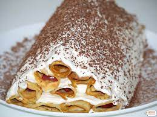

Pe această pagină de sait,,Culinăria,,vei găsi bucatele ce-mi olace să le gătesc și care sunt ușor de gătit.
Deobicei îmi place să gătesc salate,paste și uneori dulciuri.În continuare va voi prezenta rețeta clătitelor cu vișină.Sunteți gata?

Clatite cu visine
Desertul copilariei mele! Era si este de nelipsit de la orice sarbatoare petrecuta in familie. Dispare de pe masa in cateva minute 🙂 , cei mici pur si simplu il adora. Clatitele le prepar dupa reteta mea de „Aluat pentru clatite”, pentru umplutura puteti sa folositi dulceata de visine sau de cirese, eu folosesc visine conservate, fara samburi. Sunt foarte delicioase, vi le recomand cu drag!